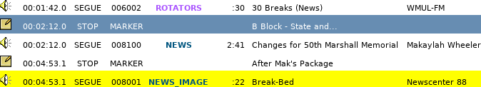

11.B. Board-Operating (Producing) Newscenter 88
Board-operating an edition of Newscenter 88 is a process with many steps. This is one of those situations where a program requires more attention of the board-operator than the generic talk-show or sportscast.
You will be in control of the station during this program; therefore, you will complete the logs. 8. WMUL-FM’s Operator Logs on Page 23 of Volume II. Make certain to sign on and off, record the program start and end times, and take a meter reading if the newscast runs between :50 and :59.
See 7.B.3. Computer Playback (Automation) — Briefly for a quick introduction to the computer playback if you are not already familiar.
11.B.1. Approximately One Hour Before the News
-
Ingest all the packages. If weather or sports are pre-recorded, ingest those as well. See 18. Ingesting New Audio with Adobe Audition on Page 101 in Volume III.
-
The source files will be in the folder:
Z:\News\Packages, Sports and Weather\<Semester>\<day of week>\<date> -
Use the "NEWS" group.
-
-
Create the program episode log. 16.C.2. Creating a New Log Based on an Existing Log on Page 65 in Volume III
-
Insert the packages, weather, and sports (if pre-recorded) into the program episode log. 16.C.4. Editing a Log on Page 66 in Volume III
-
Talk to your anchors about where to place news packages. Ask them which block the stories are in, and in what order. It will be indicated in the script, if the script is complete. The different blocks will be indicated through notes in the log. Insert the first package after the block note.
-
Insert a note after the package. Give it a "STOP" transition. Give it a title that you will understand. This note with a "STOP" transition will prevent the computer from continuing on to the break bed after the package.

-
Sports Packages go under "FM88 Sports Report", which is another note in the log. If there is more than one sports package, check with your sports anchor to find out what order the packages are to air. If the sports report is pre-recorded, it will go in this space.
-
Weather (if pre-recorded) goes after "WX Rejoin" and before the block note. The weather anchor starts immediately after the "WX Rejoin" without the main anchors talking.
-
-
Load the program episode log in Studio A on Rivendell 2. 14.C.5. The Select Log Dialog Box on Page 18 in Volume III
11.B.2. Five to Ten Minutes Before News
-
Begin to fade things up in Studio A.
-
Put "Rivdell 2" in PGM and fade it up, but leave it turned off.
-
Find which microphones on the table correspond with your anchors. The anchors will usually seat themselves at Mics 1 and 2, or 1 and 6. Put the microphones in PGM, fade them up, and place them in cue. 11.C. The Public Affairs Table on Page 117 in Volume II
-
-
Conduct mic checks with the anchors to make certain that the microphones are hooked up correctly and working.
-
Make certain that the anchors have given you a copy of the script.
11.B.3. Immediately Before News
-
Begin signing onto the log using the WMUL Log app. Do not click "Sign On" yet.
-
Start the recording. 10.E. Using the Flash Recorder in Studio A on Page 90 in Volume II The SD card has twenty-four (24) hours of capacity, so don’t fret about starting the recording too early. An extra ten (10) minutes is nothing to worry about. It’s much harder to recover the missed audio from the skimmer when the recording is started late.
-
Alert the anchors that the news is about to start. Press the yellow button labeled "TB" on the right hand side of the board and speak into the "CR Mic Front". They will be able to hear you in the classroom speakers and in their headphones. You will be able to hear them provided that you have them in cue.
-
Turn on "Rivdell 2" on the board.
-
Toggle "Rivendell 1" to "Manual".
-
Precisely at 5:00 P.M., fade down "Rivdell 1".
11.B.4. During The Newscast
-
Click the start button on the "Newscenter 88 Intro". The intro will play. There will be a Legal ID followed by a voice over music. The voice-over introduces Newscenter 88.
-
Turn the anchors' microphones on when the voice-over tosses to them. It will say "And now… the Newscenter 88 team." The pie wedge will count you down to the point in the intro where the anchors should start talking. 14.B.5. Pie Wedge on Page 9 in Volume III
-
After the anchors begin speaking, finish signing onto the logs by clicking "Sign On" and then log the Program Start.
-
At a convenient time during the first segment, make certain that the music has stopped on "Rivendell 1". If songs continue to play, then Rivendell will continue sending "now playing" updates to the web stream. It may falsely say that a song is playing instead of the news.
-
Make certain you are following the script. You are given one for a reason, even if it seems unnecessary. Turn the anchors' individual microphones on and off as they progress through their stories.
-
Rolling Breaks
-
On the script, it will say "ROLL BREAK BED".
-
You will fire the break bed then by clicking the start button on the break bed. A music bed will begin playing and the anchor will talk over the it.
-
Once the anchor has completed the toss to break (which you can determine by following the script), turn the anchor microphones off. Place them in cue so that the anchors can communicate with you during the break.
-
-
Breaks are scheduled for one minute; however, the real target is the time on the wall clock. See 11.B.7. Timing the Newscast on Page 115 in Volume II. Add or delete breaks to come close to the scheduled time. Let the anchors know if you alter the length of a break.
-
Use the talk-back to give your anchors 30 second and 10 second warnings.
-
When the break is over, turn their microphones back on.
-
-
Rolling Packages
-
You treat rolling a package the same way you would rolling a break.
-
Click the start button on the package on "Rivendell 2".
-
Turn the microphones off.
-
Make certain your anchors are aware of the time remaining on the package. Use the talk-back to give your anchors warnings at 1 minute, 30 seconds, and 10 seconds.
-
Turn microphones back on after the package ends.
-
-
-
During the Break before the weather:
-
Jump the "Rivendell 1" log to 5:30 P.M. or as close as possible before that time (E.G. A song that is scheduled to start at 5:28 P.M.). This makes certain that the correct music or programming plays after news. See 15.C. Jumping the Log on Page 50 in Volume III.
-
Toggle "Rivendell 1" back into Automatic mode.
-
Fade up "Rivdell 1" on the board.
-
-
Weather and The FM-88 Sports Report
-
Each anchor will give you a copy of the script for that segment.
-
The weather and sports anchors will enter the classroom studio during the break immediately before the weather.
-
Check which microphone each anchor is using. Turn it on and off the same as the main anchor microphones.
-
Sports packages are rolled the same as any other package. Follow along with the sports script.
-
11.B.5. Ending The News
-
The final segment is known as "Kickers". There will be variable number of stories in this segment. Some days there will be only one (1), other days there might be five (5) or six (6). There might not be time remaining in the newscast for all of the stories. Let the anchors know how many stories you expect they will have time for. Adjust the final break and the number of kickers so that the outro rolls as close to 29:15 as possible. 11.B.7. Timing the Newscast on Page 115 in Volume II
-
Anchor 2 will read the first story out of the break. The two anchors will trade off reading each story. This may or may not be properly shown in the script. You have to pay attention to when one story ends and the next begins.
-
Roll the outro. Whichever anchor is supposed to read next will read the farewell, no matter what the script says. The script may say that Anchor 1 will read the farewell, but if Anchor 1 just read a story, then Anchor 2 will actually read the farewell. The farewell will conclude the newscast and thank everyone involved and will end with a thought of the day.
-
Once the anchor is finished, turn all microphones off.
-
Allow the outro to finish playing.
-
Once the outro finishes, click the start button on the first song on "Rivendell 1". Make certain that it is in "Automatic" mode.
11.B.6. Final Steps
-
Stop the recording.
-
Log the end of the program and then sign off the log.
-
Turn off "Rivdell 2" on the board, fade it down, and take it out of PGM and AUD.
-
Unload the newscast log from "Rivendell 2".
-
It is your responsibility to pull the recording of the news off the recorder. If there is another program immediately after the newscast (E.G. Sports Night), you may have to wait until later in the evening or the next day to retrieve the recording.
You may communicate with one of the sports night producers for them to save the newscast for you, but it is ultimately YOUR responsibility. If they agree to save the newscast and then drop the ball, it lands back in your lap.
-
Copy the recording into: Z:\News\Newscasts\<semester and year> 10.E.2. Moving The Recorded File to Your Folder on Page 91 in Volume II
-
Rename the file to: "NC88 - Date - Anchor names (W-Weather Anchor, S-Sports Anchor, RP-Reporters, SR-Sports Reporters, P-Producer)". Use the date format YYYY-MM-DD so that the files are naturally sorted in the folder. E.G. "NC88 - 2020-11-13 - Zane Bowles and Makaylah Wheeler (W-Nick Matawa, S-Nick Verzolini, RP-Makaylah Wheeler, P-Mike Stanley)".
-
Edit the file to trim the music from the beginning and end.
-
Re-save it as a 44,100 Hz, 16-bit, mono, .wav file.
-
11.B.7. Timing the Newscast
Part of your duties as producer is to time out the newscast, first by extending or reducing the lengths of the breaks, and then by figuring out how many kickers will air in the final segment. The News Director or an experienced anchor may supervise this, especially when you are new.
Each break is scheduled for a duration of one (1) minute, but the real target is the time on the wall clock. You want to come out of each break near a specific time. Add or delete breaks to come close to the scheduled time. Use the next stop timer to determine when on the clock the break will end. See 14.B.6. Next Stop Counter on Page 10 in Volume III. The timing targets are as follows.
| Break # | 30-minute Newscasts | 15-minute Newscasts | |
|---|---|---|---|
Break 1 |
06:00 |
04:30 |
|
Break 2 |
11:00 |
08:00 |
|
Break 3 |
16:00 |
11:00 |
|
Break 4 |
21:00 |
13:30 |
|
Break 5 |
27:00 |
— |
|
Outro |
29:15 |
14:15 |
The final break is a more fluid target than the others. It depends on how many kickers are in the script. Backtime from 29:15 (14:15) and budget 00:45 seconds for each story. If there are only 2 kickers, that’s 01:30, so the break needs to end closer to 27:45 (12:45) . Prefer to end the newscast a bit over 30 (15) minutes rather than a bit under.
You may also have to cut some kickers on the fly during the final segment. If it is already past 29:00 (14:00) when the anchor finishes a story, go ahead and roll the outro, even if there are still stories in the script. Don’t roll the intro in the middle of a story, even if the story is running long.
You may have to preemptively shorten or eliminate the final break.
-
If the FM-88 Sports Report runs past :27:00 (13:00), go ahead and cut the final break down to 00:30 seconds.
-
If the Sports Report runs past :27:30 (13:30), eliminate the break entirely and communicate to the anchors to go straight to the kickers after the sports report.
-
If the Sports Report runs past :29:00 (14:00), eliminate even the kicker and roll the outro after the sports report.
11.B.8. Final Thoughts
The most important things to remember are:
-
Breathe. We appreciate what you are doing, and know you are trying your best.
-
If you don’t know, ask. You can always contact the News Director, Training Coordinator, or Student Manager.
-
We truly do appreciate your contribution to the news, and that you are working with us. Please remember that we are here to help you.